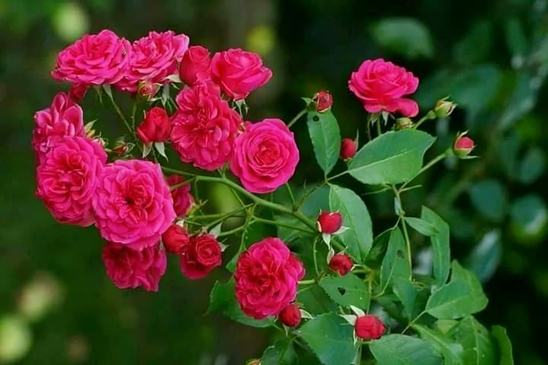

Plantas para todos
Estos seres vivos pertenecen al mundo de los vegetales, pueden vivir en la tierra o en el agua, nos ofrecen sombra en los días muy soleados, y retienen el exceso de agua para que sus hojas estén siempre verdes. Una de sus principales virtudes es reconvertir en alimentos todos aquellos desperdicios que los humanos producimos, es decir, pueden hacer limpieza de la tierra.